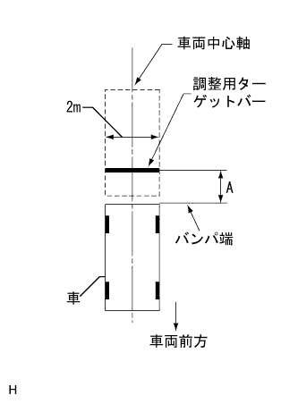
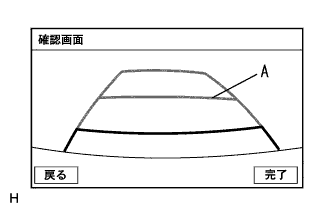

- Vehicle Linking Setting
- G-BOOK use resumption operation and HELPNET service start operation (vehicles subscribed to G-BOOK service)
- License recovery (with purchased G-SOUND unlimited license)
Back Guide Monitor Registration Settings |
| Work Performed | Adjustment Item | Reference |
|---|---|---|
| When the steering sensor is removed and installed, or the steering sensor connector is disconnected and reconnected | Steering Angle Neutral Point Memorization |
|
| Steering sensor replacement | Steering Angle Neutral Point Memorization |
|
| Replacement of navigation receiver assembly | Steering Angle Adjustment and Camera Optical Axis Adjustment | Go to step 1 |
|
| |
| When alignment adjustment is performed, or suspension and chassis parts are removed, installed or replaced | Steering Angle Adjustment and Camera Optical Axis Adjustment | Go to step 1 |
| When the vehicle height changes due to tire replacement, etc. | Camera Optical Axis Adjustment | Go to step 2 |
| When the installation angle of the television camera assembly on the body has shifted for any reason (removal and installation of the television camera assembly, etc.), and when it is replaced | Camera Optical Axis Adjustment | Go to step 2 |
| 1. Steering Angle Adjustment and Camera Optical Axis Adjustment |
Preparation Before Adjustment
Set the steering wheel in the straight-ahead position and stop the vehicle.
Adjust the tire pressure to the specified value beforehand.
 |
Place the camera optical axis adjustment target bars in the positions shown in the illustration.
Start diagnosis (see)
Select "Function Inspection/Adjustment" on the service inspection screen to display the function inspection/adjustment screen.
Select "Camera Optical Axis Adjustment" on the function inspection/adjustment screen to display the steering angle adjustment screen.
 |
Steering Angle Adjustment
)Check that the steering wheel is in the position for driving the vehicle straight ahead (approximately straight, ±5 degrees or less as a guide), and select "Steering Angle Neutral Point Memory".
After memorizing the steering angle neutral point, turn the steering wheel to the left until it stops, then to the right until it stops, and press "Maximum Steering Angle Memory". (Right may be done first)
At the moment it is pressed, a confirmation beep is output, the steering angle adjustment values (steering angle neutral point and maximum steering angle) are stored, and the screen switches to the camera optical axis adjustment screen.
)  |
Camera Optical Axis Adjustment
)Press switch A or B to rotate C so that it is parallel to the adjustment target bar.
Press switches D, E, F and G to move C left, right, up and down so that the adjustment target bar is in the center of C (center of the red frame).
Select "Next" to display the confirmation screen.
 |
Confirmation Screen
Check that A (indicating 117 cm from the bumper edge) and the adjustment target bar almost overlap. Also, check that when the steering wheel is in the straight-ahead position, the estimated course line is straight (overlaps the vehicle width extension line).
When "Complete" is selected, the screen changes to the function inspection/adjustment screen and the camera optical axis adjustment value is stored.
Diagnosis Cancellation (see)
Steering Angle Adjustment Check
On the back guide monitor screen, check that the estimated course line moves in conjunction with the steering wheel until the steering wheel is turned fully to the left or right.
| 2. Camera Optical Axis Adjustment |
Preparation Before Adjustment
Set the steering wheel in the straight-ahead position and stop the vehicle.
Adjust the tire pressure to the specified value beforehand.
Place the camera optical axis adjustment target bars in the positions shown in the illustration.
Start diagnosis (see)
Select "Function Inspection/Adjustment" on the service inspection screen to display the function inspection/adjustment screen.
Select "Camera Optical Axis Adjustment" on the function inspection/adjustment screen to display the steering angle adjustment screen.
|
Steering Angle Adjustment
) |
Camera Optical Axis Adjustment
)Press switch A or B to rotate C so that it is parallel to the adjustment target bar.
Press switches D, E, F and G to move C left, right, up and down so that the adjustment target bar is in the center of C (center of the red frame).
Select "Next" to display the confirmation screen.
Confirmation Screen
Check that A (indicating 117 cm from the bumper edge) and the adjustment target bar almost overlap. Also, check that when the steering wheel is in the straight-ahead position, the estimated course line is straight (overlaps the vehicle width extension line).
When "Complete" is selected, the screen changes to the function inspection/adjustment screen and the camera optical axis adjustment value is stored.
Diagnosis Cancellation (see)